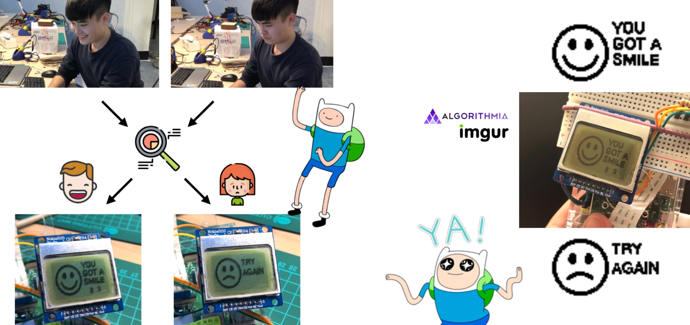
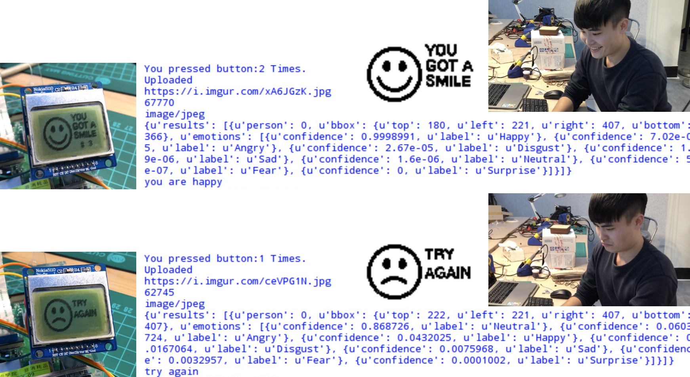

Raspberry Pi
Pi Camera
Nokia 5110 LCD
Emotion Detection
Smile Collector responds to the pressures of modern life—stress, fatigue, and the rarity of genuine joy. The project proposes a playful remedy: collecting smiles as a way to uplift oneself and others. Rooted in the idea that emotional expression can be contagious, the device encourages people to face the camera, offer a smile, and momentarily brighten their day. By turning a simple gesture into an interactive ritual, the work emphasizes how small emotional exchanges can ripple outward, fostering connection through lightness and humor.
The device is built on a Raspberry Pi 3 with a Pi Camera and Nokia 5110 LCD. After a button press, the system captures a photo, uploads it to Imgur to obtain a URL, and sends the image to Algorithmia’s emotion-recognition API for analysis. If a smile is detected, the LCD displays a celebratory “You got a smile!”; otherwise, it prompts the user to try again. The system also tracks how many smiles the user has collected, turning emotional feedback into a lightweight gamified loop.
